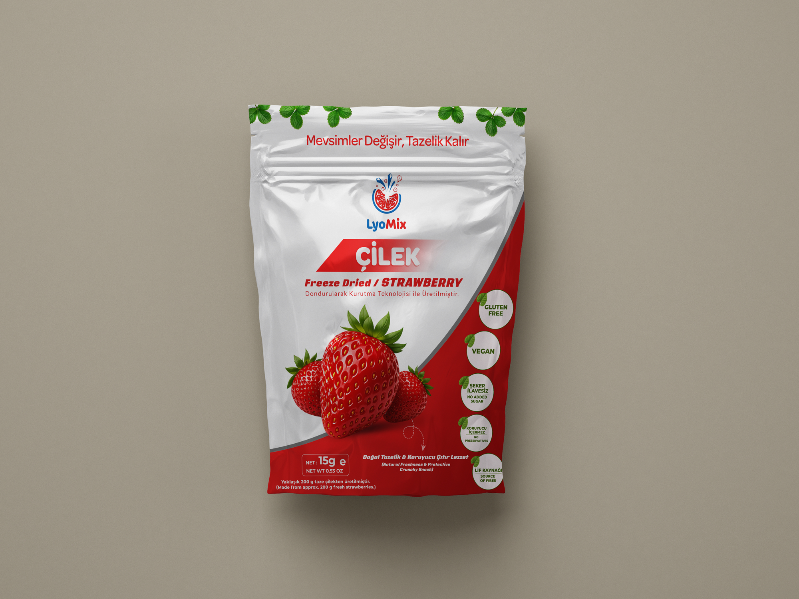

🍓 Çilek

📦ÇİLEK PAKET FOTOimages/cilek.png
Strawberry
- "Bulutlar kadar hafif, ilk günkü kadar taze; mevsimsiz bir çıtır çilek rüyası."
- "Çocukluğunun o mis kokulu tarla çileği, şimdi en kıtır ve en saf haliyle paketinde."
- "Tatlı krizlerine vicdan azabı çektirmeyen, doğanın en kırmızı ve en çıtır hediyesi."